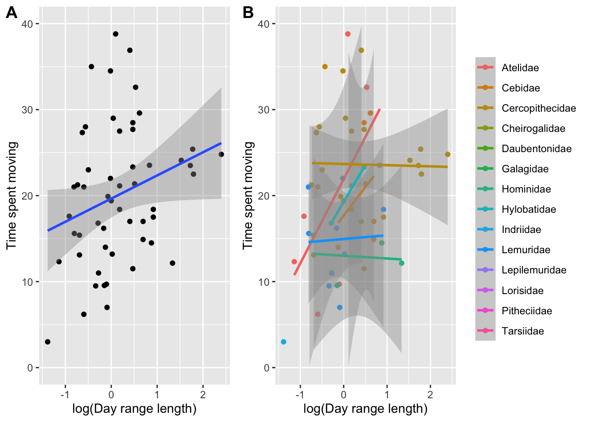
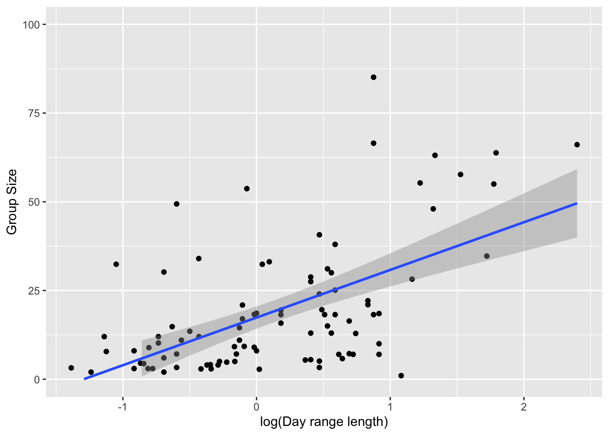
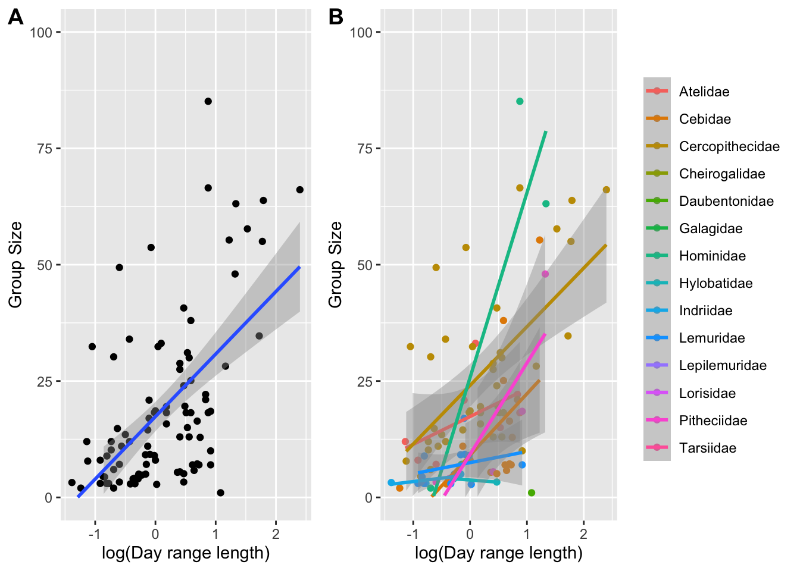
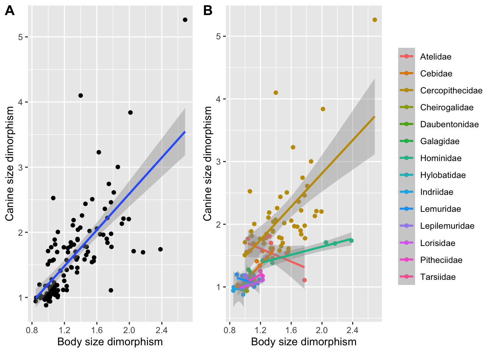
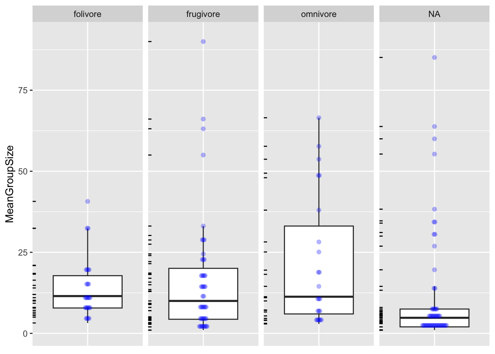

Load the “data-wrangling.csv” dataset from this URL as a tabular data structure named d and look at the variables it contains
library(tidyverse)
Warning: package 'readr' was built under R version 4.2.3
Warning: package 'dplyr' was built under R version 4.2.3
Warning: package 'stringr' was built under R version 4.2.3
── Attaching core tidyverse packages ──────────────────────── tidyverse 2.0.0 ──
✔ dplyr 1.1.4 ✔ readr 2.1.5
✔ forcats 1.0.0 ✔ stringr 1.5.1
✔ ggplot2 3.4.4 ✔ tibble 3.2.1
✔ lubridate 1.9.3 ✔ tidyr 1.3.0
✔ purrr 1.0.2
── Conflicts ────────────────────────────────────────── tidyverse_conflicts() ──
✖ dplyr::filter() masks stats::filter()
✖ dplyr::lag() masks stats::lag()
ℹ Use the conflicted package (<http://conflicted.r-lib.org/>) to force all conflicts to become errors
f <-"https://raw.githubusercontent.com/difiore/ada-2024-datasets/main/data-wrangling.csv"d <-read_csv(f, col_names =TRUE)
Rows: 213 Columns: 23
── Column specification ────────────────────────────────────────────────────────
Delimiter: ","
chr (6): Scientific_Name, Family, Genus, Species, Leaves, Fauna
dbl (17): Brain_Size_Species_Mean, Body_mass_male_mean, Body_mass_female_mea...
ℹ Use `spec()` to retrieve the full column specification for this data.
ℹ Specify the column types or set `show_col_types = FALSE` to quiet this message.
Create new variables - BSD (body size dimorphism), the ratio of mean male to female body mass - sex_ratio, the ratio of the number of adult females to adult males in a typical group - DI (for “defensibility index”), the ratio of day range length to the diameter of the home range
d <- d %>%mutate(BSD = Body_mass_male_mean/Body_mass_female_mean, sex_ratio = AdultFemale/AdultMales,DI = DayLength_km/(sqrt(HomeRange_km2/pi)*2)) # sqrt(Area/pi)*2 = d
Plot the relationship between day range length and time spent moving, for these primate species overall and by family. - Do species that spend more time moving travel farther overall? A: Yes, based on regression line - How about within any particular primate family? A: Yes for Atelidae, Hylobatidae, Cebidae - Should you transform either of these variables? A: log transformed day range length
library(ggplot2)library(cowplot) # to show graphs side by side
Warning: package 'cowplot' was built under R version 4.2.3
Attaching package: 'cowplot'
The following object is masked from 'package:lubridate':
stamp
plot1 <-ggplot(data = d, aes(x =log(DayLength_km), y = Move)) +# build a plot objectxlab("log(Day range length)") +ylab("Time spent moving") +# modify the axis labelsgeom_point(na.rm =TRUE) +# make a scatterplotgeom_smooth(method ="lm", na.rm =TRUE) +# add a regression lineylim(0, 40) +# set y-axis rangetheme(legend.title =element_blank()) # modify the legendplot1 # plot the object
`geom_smooth()` using formula = 'y ~ x'

plot2 <-ggplot(data = d, aes(x =log(DayLength_km), y = Move,color =factor(Family))) +# build a plot object and color points by Familyxlab("log(Day range length)") +ylab("Time spent moving") +# modify the axis labelsgeom_point(na.rm =TRUE) +# make a scatterplotgeom_smooth(method ="lm", na.rm =TRUE) +# add a regression lineylim(0, 40) +# set y-axis rangetheme(legend.title =element_blank()) # modify the legendplot2 # plot the object
`geom_smooth()` using formula = 'y ~ x'
Warning in qt((1 - level)/2, df): NaNs produced
Warning in max(ids, na.rm = TRUE): no non-missing arguments to max; returning
-Inf
Warning in qt((1 - level)/2, df): NaNs produced
Warning in qt((1 - level)/2, df): no non-missing arguments to max; returning
-Inf
Plot the relationship between day range length and mean group size, overall and by family. - Do species that live in larger groups travel farther overall? A: Yes, based on regression line - How about within any particular primate family? A: Yes for Cercopithecidae, Hominidae, Tarsiidae, Cebidae - Should you transform either of these variables? A: log transformed day range length
plot1 <-ggplot(data = d, aes(x =log(DayLength_km), y = MeanGroupSize)) +# build a plot objectxlab("log(Day range length)") +ylab("Group Size") +# modify the axis labelsgeom_point(na.rm =TRUE) +# make a scatterplotgeom_smooth(method ="lm", na.rm =TRUE) +# add a regression lineylim(0, 100) +# set y-axis rangetheme(legend.title =element_blank()) # modify the legendplot1 # plot the object
`geom_smooth()` using formula = 'y ~ x'

plot2 <-ggplot(data = d, aes(x =log(DayLength_km), y = MeanGroupSize,color =factor(Family))) +# build a plot object and color points by Familyxlab("log(Day range length)") +ylab("Group Size") +# modify the axis labelsgeom_point(na.rm =TRUE) +# make a scatterplotgeom_smooth(method ="lm", na.rm =TRUE) +# add a regression lineylim(0, 100) +# set y-axis rangetheme(legend.title =element_blank()) # modify the legendplot2 # plot the object
`geom_smooth()` using formula = 'y ~ x'
Warning in qt((1 - level)/2, df): NaNs produced
Warning in max(ids, na.rm = TRUE): no non-missing arguments to max; returning
-Inf
Warning in max(ids, na.rm = TRUE): no non-missing arguments to max; returning
-Inf
Warning in max(ids, na.rm = TRUE): no non-missing arguments to max; returning
-Inf
`geom_smooth()` using formula = 'y ~ x'
`geom_smooth()` using formula = 'y ~ x'
Warning in qt((1 - level)/2, df): NaNs produced
Warning in qt((1 - level)/2, df): no non-missing arguments to max; returning
-Inf
Warning in qt((1 - level)/2, df): no non-missing arguments to max; returning
-Inf
Warning in qt((1 - level)/2, df): no non-missing arguments to max; returning
-Inf

Plot the relationship between body size dimorphism and canine size dimorphism overall and by family.
Do taxa with greater size dimorphism also show greater canine dimorphism? A: Yes, overall and in Carcopithecidae, Hominidae, Cebidae, Tarsiidae, and Lorisidae families
plot1 <-ggplot(data = d, aes(x = BSD, y = Canine_Dimorphism)) +# build a plot objectxlab("Body size dimorphism") +ylab("Canine size dimorphism") +# modify the axis labelsgeom_point(na.rm =TRUE) +# make a scatterplotgeom_smooth(method ="lm", na.rm =TRUE) +# add a regression line# ylim(0, 100) + # set y-axis rangetheme(legend.title =element_blank()) # modify the legendplot1 # plot the object
`geom_smooth()` using formula = 'y ~ x'

plot2 <-ggplot(data = d, aes(x = BSD, y = Canine_Dimorphism,color =factor(Family))) +# build a plot object and color points by Familyxlab("Body size dimorphism") +ylab("Canine size dimorphism") +# modify the axis labelsgeom_point(na.rm =TRUE) +# make a scatterplotgeom_smooth(method ="lm", na.rm =TRUE) +# add a regression line# ylim(0, 100) + # set y-axis rangetheme(legend.title =element_blank()) # modify the legendplot2 # plot the object
`geom_smooth()` using formula = 'y ~ x'
Warning in qt((1 - level)/2, df): NaNs produced
Warning in max(ids, na.rm = TRUE): no non-missing arguments to max; returning
-Inf
`geom_smooth()` using formula = 'y ~ x'
`geom_smooth()` using formula = 'y ~ x'
Warning in qt((1 - level)/2, df): NaNs produced
Warning in qt((1 - level)/2, df): no non-missing arguments to max; returning
-Inf
Create a new variable named diet_strategy that is “frugivore” if fruits make up >50% of the diet, “folivore” if leaves make up >50% of the diet, and “omnnivore” if neither of these is true. Then, do boxplots of group size for species with different dietary strategies.
Do frugivores live in larger groups than folivores? A: No, overlap in IQR (frugivore has more outliers)
d <- d %>%mutate(diet_strategy =case_when(Fruit >50~"frugivore", Leaves >50~"folivore", Fruit <50& Leaves <50~"omnivore")) # specify to avoid NAs
p <-ggplot(data = d, aes(x =factor(0), y = MeanGroupSize)) +geom_boxplot(na.rm =TRUE, outlier.shape =NA) +theme(axis.title.x =element_blank(), axis.text.x =element_blank(), axis.ticks.x =element_blank()) +geom_dotplot(binaxis ="y", stackdir ="center", stackratio =0.2, alpha =0.3, dotsize =0.5, color =NA, fill ="blue", na.rm =TRUE) +facet_grid(. ~ diet_strategy) +geom_rug(sides ="l")p
Bin width defaults to 1/30 of the range of the data. Pick better value with
`binwidth`.

In one line of code, using {dplyr} verbs and the forward pipe (%>% or |>) operator, do the following: - Add a variable, Binomial to the data frame d, which is a concatenation of the Genus and Species… - Trim the data frame to only include the variables Binomial, Family, Brain_size_species_mean, and Body_mass_male_mean… - Group these variables by Family… - Calculate the average value for Brain_size_species_mean and Body_mass_male_mean per Family (remember, you may need to specify na.rm = TRUE)… - And arrange by increasing average brain size
d <- d %>%mutate(Binomial =str_c(Genus, " ", Species)) %>%select(Binomial, Family, Brain_Size_Species_Mean, Body_mass_male_mean) %>%group_by(Family) %>%summarize(avg_brain_size =mean(Brain_Size_Species_Mean),avg_male_body_mass =mean(Body_mass_male_mean)) %>%arrange(avg_brain_size)